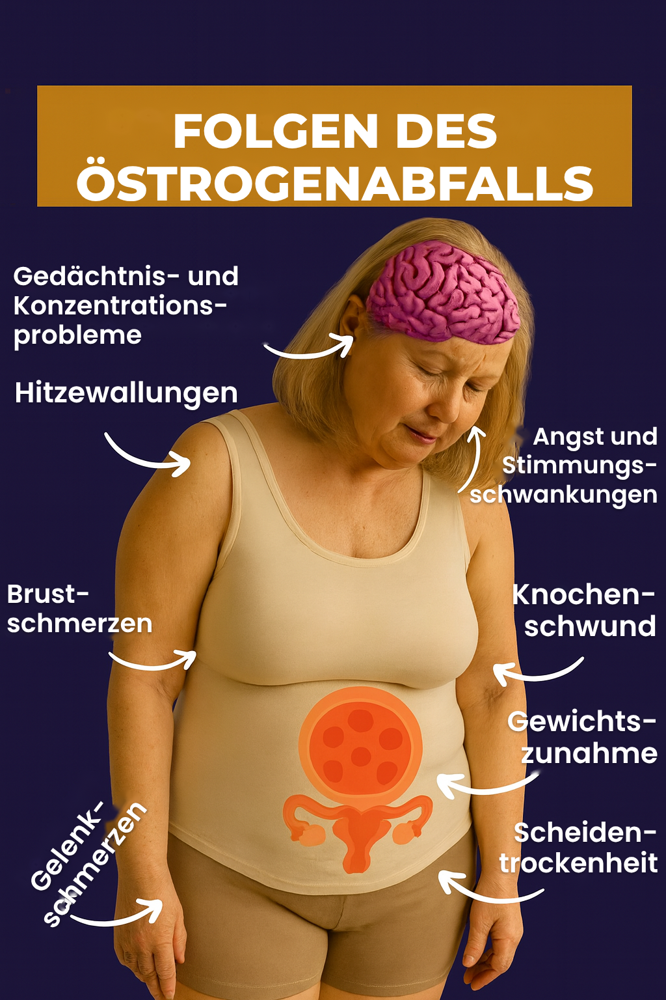

Hitzewallungen kommen nicht aus dem Nichts. Sie sind ein deutliches Zeichen dafür, dass Ihr Körper eine wichtige hormonelle Umstellung durchmacht – vor allem den Rückgang des Östrogens, eines Hormons, das für den Wärmehaushalt des Körpers unverzichtbar ist.
Östrogen wirkt direkt auf den Hypothalamus – den Bereich im Gehirn, der die Körpertemperatur steuert. Sinkt der Östrogenspiegel, deutet das Gehirn schon kleine Temperaturschwankungen als echte Überhitzung. Die Folge: plötzliche Hitzewellen, starkes Schwitzen, ein gerötetes Gesicht und Unwohlsein.
Die gute Nachricht: Mit einfachen, natürlichen Anpassungen im Alltag können Sie Ihren „inneren Thermostat“ neu einstellen und Häufigkeit und Stärke der Hitzewallungen deutlich verringern.

Im Folgenden setzen Sie einen einfachen, schrittweisen und körperfreundlichen Plan um. Jeder Tag nimmt einen anderen Auslöser der Hitzewallungen ins Visier und hilft Ihrem Körper, auf natürliche Weise wieder ins Gleichgewicht zu finden.
Salbei ist dafür bekannt, übermäßiges Schwitzen zu verringern. Trinken Sie über den Tag verteilt eine Tasse Salbeitee.
Machen Sie abends die 4-2-4-Atmung: 4 Sekunden einatmen, 2 Sekunden halten und 4 Sekunden langsam ausatmen. 5 Minuten lang wiederholen.
Beginnen Sie den Tag mit einem Glas lauwarmem Zitronenwasser, um die Leber zu unterstützen – ein wichtiges Organ für den Hormonstoffwechsel.
Machen Sie einen leichten Spaziergang von 20 Minuten in Ihrem eigenen Tempo. Bewegung hilft, die Körpertemperatur zu regulieren und Stress abzubauen.
Essen Sie abends leicht und meiden Sie fettige oder stark gewürzte Speisen.
Beginnen Sie beim Duschen mit warmem Wasser und drehen Sie es zum Schluss langsam kälter. So lernt Ihr Körper wieder, seine Temperatur selbst zu regulieren.
Verzichten Sie an diesem Tag auf Kaffee und andere anregende Getränke. Koffein kann Hitzewallungen verstärken.
Legen Sie sich für einige Minuten eine kalte Kompresse in den Nacken, sobald Sie spüren, dass eine Hitzewallung kommt.
Bereiten Sie einen Salat aus grünem Blattgemüse, Avocado und Kurkuma zu. Diese Lebensmittel helfen, Entzündungen zu verringern, und unterstützen das hormonelle Gleichgewicht.
Dehnen Sie sich morgens oder abends sanft, um Verspannungen zu lösen.
Ergänzen Sie das Ganze mit 10 Minuten Bauchatmung – atmen Sie dabei tief in den Bauch hinein.
Meiden Sie an diesem Tag komplett Zucker, Alkohol, Kaffee und stressige Situationen. Lassen Sie Ihren Körper die gesammelte Wirkung des Plans spüren.
Viele Frauen bemerken schon am Ende dieses siebten Tages eine deutliche Verringerung der Hitzewallungen.
Denken Sie daran: Diese Methode können Sie so oft wiederholen, wie Sie möchten. Je konsequenter Sie dranbleiben, desto schneller lernt Ihr Körper, seine Temperatur im Griff zu behalten.